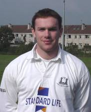

Name
John Kelly
Position
Centre
Date Of Birth
18/04/74
Occupation
Professional Rugby Player
Honours
Irish International,
Ireland A,
Munster interprovincial,
Combined Provinces v South Africa,
AIL 1998-99,
1 Junior Cup Medal.
